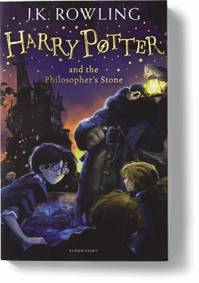
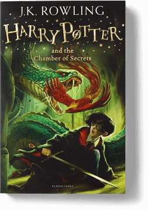
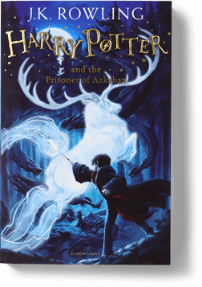
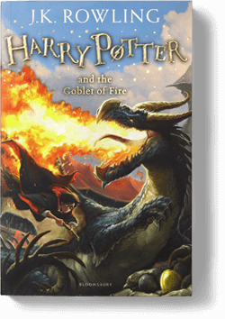
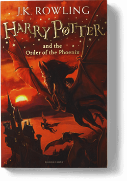
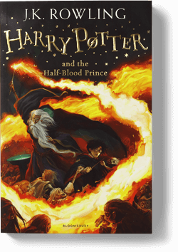

Жизнь десятилетнего Гарри Поттера нельзя назвать сладкой: родители умерли, едва ему исполнился год, а от дяди и тёти, взявших сироту на воспитание, достаются лишь тычки да подзатыльники. Но в одиннадцатый день рождения Гарри всё меняется.
Гарри Поттер и философский камень

Гарри Поттер переходит на второй курс Школы чародейства и волшебства Хогвартс. Эльф Добби предупреждает Гарри об опасности, которая поджидает его там, и просит больше не возвращаться в школу. Юный волшебник не следует совету эльфа и становится свидетелем таинственных событий, разворачивающихся в Хогвартсе.
Гарри Поттер и Тайная комната

Гарри, Рон и Гермиона возвращаются на третий курс школы чародейства и волшебства Хогвартс. На этот раз они должны раскрыть тайну узника, сбежавшего из тюрьмы Азкабан, чье пребывание на воле создает для Гарри смертельную опасность.
Гарри Поттер и узник Азкабана

Гарри Поттер, Рон и Гермиона возвращаются на четвёртый курс школы чародейства и волшебства Хогвартс. При таинственных обстоятельствах Гарри был отобран в число участников опасного соревнования — Турнира Трёх Волшебников, однако проблема в том, что все его соперники — намного старше и сильнее.
Гарри Поттер и Кубок огня

Гарри проводит свой пятый год в школе Хогвартс и обнаруживает, что многие из членов волшебного сообщества отрицают факт недавнего состязания юного волшебника с воплощением вселенского зла Волдемортом. Все делают вид, что не имеют ни малейшего представления, что злодей вернулся. Однако впереди волшебников ждет необычная схватка.
Гарри Поттер и Орден Феникса

Теперь не только мир волшебников, но и мир маглов ощущает на себе всевозрастающую силу Волан-де-Морта, а Хогвартс уже никак не назовешь надежным убежищем. Гарри подозревает, что в самом замке затаилась некая опасность, но Дамблдор больше сосредоточен на том, чтобы подготовить его к финальной схватке, которая, как он знает, уже не за горами.
Гарри Поттер и Принц-полукровка